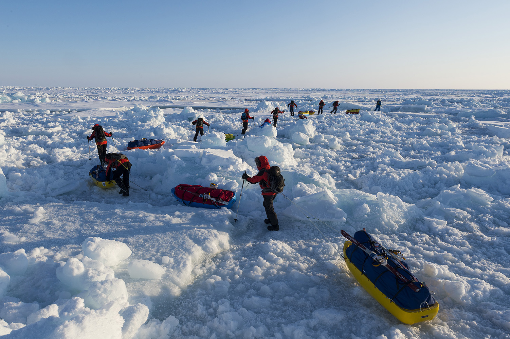

|
Ιματισμός: Ο απαραίτητος ιματισμός χωρίζεται σε τέσσερα στρώματα. Τα εσωτερικά στρώματα χρησιμοποιούνται για την παροχή μόνωσης, ενώ τα εξωτερικά παρέχουν εξαερισμό. Χρησιμοποιώντας το σύστημα των στρωμάτων ιματισμού, μπορούμε να ελέγχουμε την θερμοκρασία του σωματός μας. |
| Εξοπλισμός: Η συλλογή των ειδών επιβίωσης που πρέπει να έχει μαζί του κάποιος σε πολικές περιοχές θα πρέπει να περιλαμβάνει πρόσθετα εφόδια για την αντιμετώπιση προτεραιοτήτων που επιβάλονται από το ψύχος, π.χ. εξασφάλιση ζεστασιάς και καταφυγίου. | |
| Προστασία από το κρύο: Θα πρέπει να δίνεται ιδιαίτερη προσοχή στην προστασία της κεφαλής, των χεριών και ποδιών σας από το κρύο με τα κατάλληλα εφόδια. Επίσης θα πρέπει να διατηρείτε τα ρούχα σας σε καλή κατάσταση ώστε να αντέξουν όσο περισσότερο γίνεται στον χρόνο. | |
| Διαβάστε περισσότερα... |

|
Κρυοπάγημα: Τα κρυοπαγήματα προκαλούνται όταν ο ιστός του δέρματος παγώνει. Σε ψυχρές καιρικές συνθήκες, οποιοδήποτε σημείο εκτεθειμένου δέρματος, βρίσκεται σε κίνδυνο παγώματος, που μπορεί να οδηγήσει σε κρυοπαγήματα. |
| Υποθερμία: Η έκθεση στο κρύο για μεγάλη χρονική περίοδο, μπορεί να προκαλέσει υποθερμία, η οποία προκαλείται όταν η θερμοκρασία του σώματος πέφτει κάτω από 35 βαθμούς Κελσίου. | |
| Θάμπωμα/τύφλωση από το χιόνι: Όταν διασχίζετε μια χιονισμένη περιοχή κάτω από το έντονο φως ηλίου, τα μάτια εκτείθονται σε μεγάλο βαθμό από τις ακτίνες του ηλίου οι οποίες αντανακλώνται στο χιόνι. Η χρήση ειδικών γυαλιών χιονιού ή η κατασκευή κάποιου πρόχειρου μέσου προστασίας είναι απαραίτητη. | |
| Διαβάστε περισσότερα... |

|
Ο τύπος του καταφυγίου που θα κατασκευάσετε θα εξαρτάται από ορισμένους παράγοντες:
|
| Άναμμα φωτιάς: η φωτιά παραμένει το μόνο πλέον σημαντικό στοιχείο επιβίωσης υπό πολικές συνθήκες. Αν βγαίνετε από το καταφύγιο σας, για οποιοδήποτε χρονικό διάστημα, να βεβαιώνεστε πάντοτε ότι υπάρχουν τοποθετημένα έτοιμα υλικά για άναμμα φωτιάς. | |
| Διαβάστε περισσότερα... |
| Η αναζήτηση τροφής μπορεί να φαίνεται επικίνδυνο έργο και σε ακραίες καιρικές συνθήκες μπορεί πράγματι να είναι έτσι. Ανεξάρτητα όμως από αυτό, στην Αρκτική μπορείτε να βρείτε αφθονία από άγρια ζώα και ψάρια. Θα διαπιστώσετε ότι σε περιοχές όπου ο άνθρωπος ταξιδεύει σπάνια, έχουν αναπτυχθεί άλλα ζώα. Ακόμη και στα βορειότερα σημεία της Αρκτικής, ο πάγος και το χιόνι μπορεί να φαίνονται άγονα, αλλά το νερό είναι γεμάτο από ψάρια, αστακούς, φώκιες, θαλάσσιους ίππους και πιγκουϊνους. Η εύρεση τροφής στην Ανταρκτική είναι πιο δύσκολη υπόθεση καθώς η χλωρίδα είναι ελάχιστη, υπάρχει όμως μεγάλος αρίθμος φώκεων, πιγκουϊνων και ψαριών. Όσο απαμακρύνεται κανείς από το Βόρειο ή Νότιο Πόλο, τόσο θερμότερο είναι το κλίμα και τόσο μεγαλύτερη είναι η ποικιλία των πόρων τροφής. | |
| Διαβάστε περισσότερα... |
|  | Η απόφαση για μετακίνηση ή όχι πρέπει να λαμβάνεται σε καθημερινή βάση, εξετάζοντας πρώτα, όλους τους λόγους που επιβάλλουν μια μετακίνηση. Άπαξ και ξεκινήσετε, πρέπει να συνεχίσετε την πορεία σας και την προσπάθεια σας μέχρι να φθάσετε στον προορισμό σας. Δυστυχώς, οι καιρικές συνθήκες και στις δυο πολικές περιοχές είναι απρόβλεπτες και μια ξαφνική χιονοθύελλα στο μέσο του χειμώνα αποτελεί σοβαρή απειλή για την ζωή. |
| Οι μετακινήσεις στους πόλους είναι δυνατό να γίνουν ευκολότερες, αν αυτοσχεδιάσετε υλικό που θα ανταποκρίνεται στις συνθήκες του περιβάλλοντος. Φτιάξτε χιονοπέδιλα τύπου bushwhackers, ένα έλκηθρο ή οτιδήποτε άλλο θα βελτιώσει την ταχύτητα της κίνησης σας στο έδαφος. | |
| Διαβάστε περισσότερα... |
Up